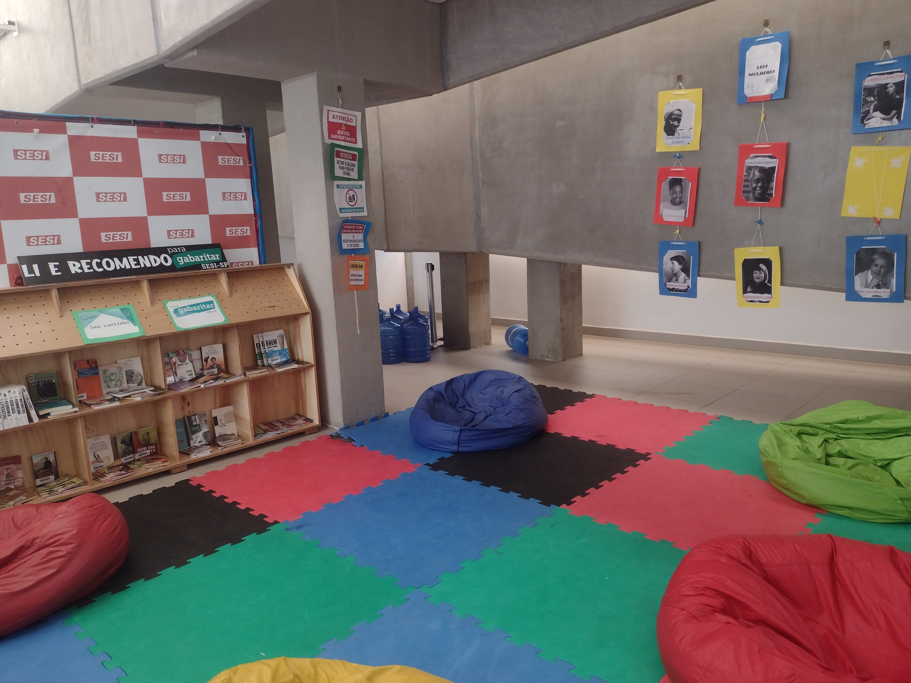
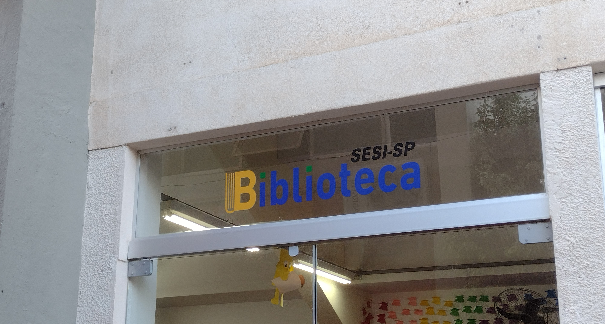
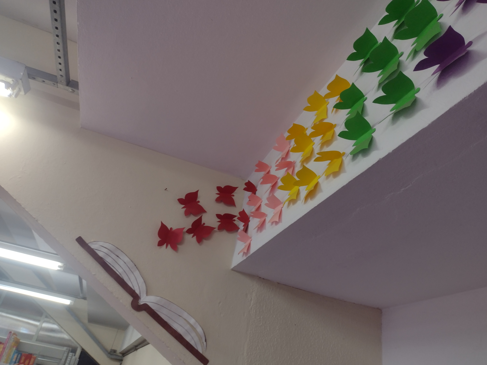
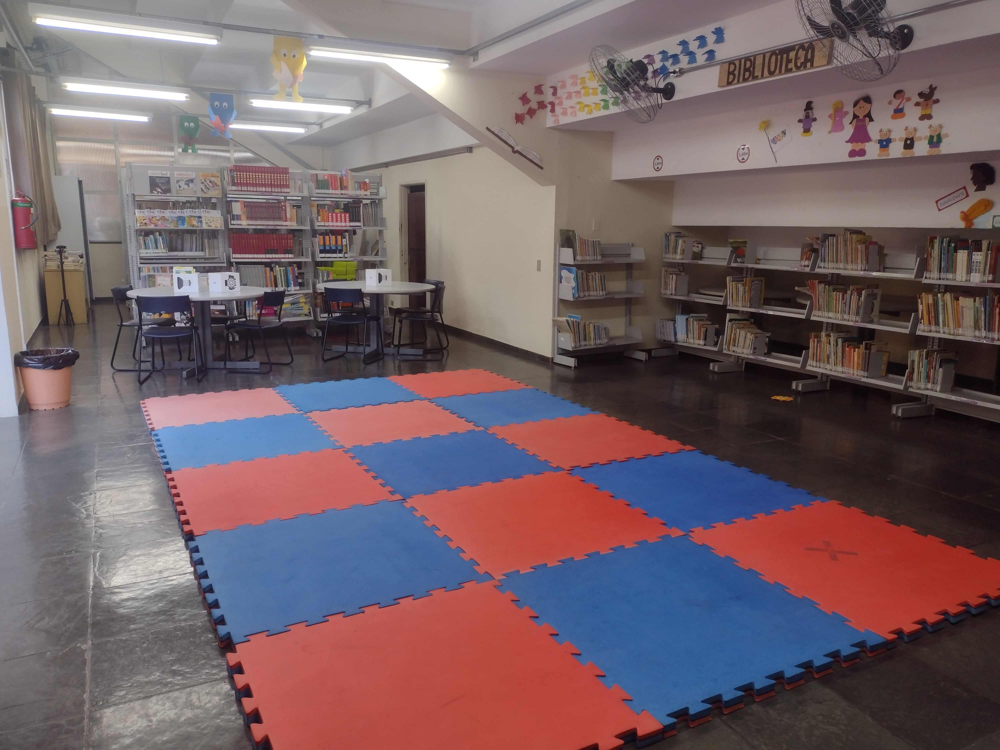
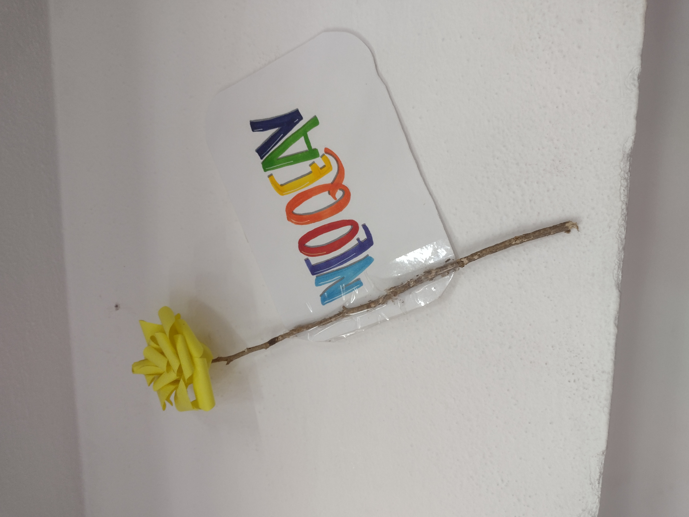

O Sesi Sorocaba possui um espaço de leitura preparado para que os alunos possam ter um momento de descanso, enquanto aproveitam os livros durante os intervalos das aulas.
O nosso espaço de leitura conta com diversos livros, de todos os gêneros e para todas as faixas etárias, para incluir e agradar a todos os gostos.
O nosso clube (CAT Sesi) conta também com uma biblioteca com mais variedades de livros. O nosso método de empréstimos de livros é super simples para que possamos atender a todos os alunos da rede Sesi Sorocaba.
Nosso espaço é super acolhedor e confortável, e conta com algumas regras básicas para uma melhor experiência:

Venha conhecer nossos espaços preferidos!
